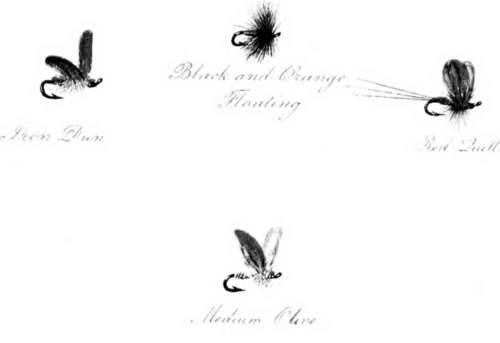
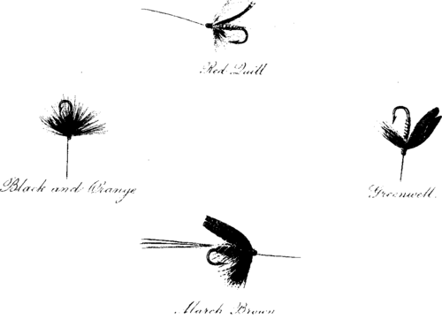

Dry, Fly Fishing. Part 8
Description
This section is from the book "Fly Fishing", by Sir Edward Grey. Also available from Amazon: Fly Fishing.
Dry, Fly Fishing. Part 8
1 The delicate and difficult device of thus fishing down stream is often described by anglers as " drifting " the dry fly. It is often the only way, especially in strong, rapid waters such as the Derbyshire Wye, of avoiding the drag.—Eds.
It must be admitted that it is not possible to make sure of this cast, but it is surprising how often it can be done with success, especially if there is a light wind down stream. There is one corner known to me on the Itchen, where good trout are constantly rising under the further bank. The corner receives in consequence special attention from every one who fishes there. The stream here is slow and smooth, and the fish become very shy: so much so, that it is on many days very difficult to cast over them at all without putting them down. I have noticed at this place that whenever conditions are favourable for arranging the drift of the fly in the manner just described, the chance of rising one of these fish is very much improved, and on still days in the summer it is seldom that I can get a rise from one of them in any other way.
The choice of the fly to be used precedes the making of the cast in point of time, but is second to it in importance. It is better to throw and float the wrong fly really well than to bungle with the right one. In common with most anglers I carry about with me a much larger variety of flies than I ever use, but successive seasons tend to diminish the number rather than to add to it, and in practice I should be content (exclusive of the May-fly and sedge-fly, which are for special waters or exceptional occasions) with four sorts. In May these would be a medium-coloured olive quill gnat, neither very light nor very dark, and the iron blue. The first of these is the one for general use, but the latter is essential also.1 As a rule, if the rising trout in May will not have the olive quill, the angler will not have very much success with anything else, and he will find that the trout are either bulging or in some state of preternatural suspicion. But there are times when the iron blue comes on the water and is taken, to the exclusion of the other flies. On such occasions the angler will easily notice the presence of iron blues, and change his fly. Sometimes it happens that the trout begin rising at olives, and the iron blue comes up later on. I have notes of days when this has happened, and when the olive was quite satisfactory for the first hour or so of the rise, till the iron blue appeared; after which the olive failed, and an imitation of the iron blue succeeded, though natural olive duns as well as iron blues continued in numbers on the water.
DRY FLIES.
WET FLIES.
1 The author is here evidently speaking of Hampshire rivers only. One rarely sees a considerable batch of the iron blue in the Hertfordshire trout streams, and not very often on the Derbyshire Wye.—Eds.
In June, or perhaps even in the latter end of May, a red quill becomes the more successful fly, and a medium size, neither large nor small, is the best. The trout have a tendency to prefer the smaller sizes, and when their appetite has become very delicate in hot summer weather the smallest possible size1 of red quill, not the smallest usually offered for sale in tackle shops, but one specially tied on the smallest hooks of all, is the most attractive. This size may do very well with trout up to one pound or one pound and a half, but the hook is too small to hold strong fish of a large size. The fish lost after being hooked on these tiny flies far exceed in numbers those which are landed, and it is better to rise fewer fish with a medium-sized fly than to hook and scare the best ones without getting any of them. The same objection applies to imitations of that troublesome little insect the " curse".
The fourth kind of fly is a plain black hackle, tied with soft hackles, and on the same sized hook as the duns. It is always worth while to float this over an obstinate trout, and on many days at all seasons it has taken one or two brace of trout, which I am convinced I should not have succeeded in rising with the winged flies. There are occasions when the black hackle will take trout one after the other. I have a note of one evening, June 16, 1894, after the trout had taken a red quill well in the day-time. I had left off about two o'clock, and returned to the same meadow about six o'clock. The fish were rising again, but very quietly, and they persistently disregarded the same red quills that had been successful before. The black hackle was offered to them dry, and six fish were landed with it. One cannot of course expect the same success with this fly on every evening, but on many evenings, when the trout have been rising in their quiet evening way between six and eight o'clock, I have found the black hackle used dry better than any other fly.
1 L. E., No. ooo.
I once had a remarkable experience with this fly. It was on July 16, 1892. There was very little rise in the morning; a few fish were seen, but as each one only rose about once in ten minutes fishing with the dry fly was very intermittent, and up till one o'clock nothing had been landed. It seemed that nothing more was to be done, and I sat gazing listlessly at the water. A fairly broad straight bit of river was before me, smooth in places, but with small ripples of stream here and there. The thoughts of other rivers and of salmon fishing came into my mind, till at last in a state of sheer despair and idleness it occurred to me that I would try a wet fly, and in salmon-fishing phrase "put it over" the piece of water before me. The black hackle, a very favourite north country fly, was chosen and used as a salmon fly, that is to say it was cast across and down the stream at an angle and kept moving gently, till the action of the stream brought it round to my own bank. The trout took it like salmon take a fly, sometimes under water, sometimes with a fair head and tail rise, sometimes with a plunge, but nearly always either when the fly was midway across the stream, or when it had come well round and was nearly straight below me; and the fish that rose took firm hold, hardly any being lost or only pricked. Now and then an isolated rise would be seen some way below me, and when the place was reached the fish nearly always came up well to the wet black hackle. At three o'clock I had six trout, and four more were added in the same way during the evening rise. The weather was not exceptional, being an ordinary fine summer's day with only a little breeze, some clouds, and intervals of sunlight. The part of the river in which this method had succeeded was not a hatch-hole or any exceptional place of that kind, but a clear, steady, even-flowing, well-fished stretch of the Itchen. It seemed that a great discovery had been made, and that the only difficulty was how to use it with moderation henceforth. Anglers are sanguine men, and are easily transported by unexpected success to heights of confidence; so they will, I trust, sympathise with my simplicity. I have on many occasions tried this fly in the same manner, in the same water, at the same time and also at different times of the season since, but never again has it succeeded to anything like the same extent. Perhaps in some seasons, when the yearly rainfall has ceased to be deficient, when this oppressive series of droughts has come to an end, and chalk streams are flowing strong, full, and clear above the weeds in midsummer, there may come another day such as July 16, 1894; but for the present I have ceased using the black hackle as a wet fly on chalk streams, not because it catches too many trout, but because it catches hardly any, and its record is classed in my mind with that of " Single speech Hamilton," " The Lost Chord," and other illustrations of amazing and isolated success.
Continue to: